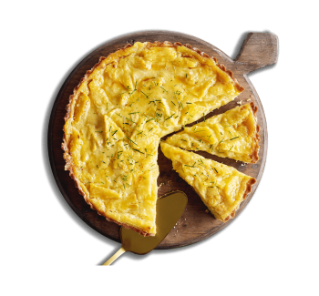

Nossos serviços

Café & Bistrô
Nosso bistrô oferece uma ampla variedade de cafés, smoothies, deliciosos salgados e sobremesas. Uma excelente opção para quem busca um lugar tranquilo e aconchegante.
Quero detalhes
Buffet
Buffet e catering personalizado para eventos, produções e celebrações. Com um menu variado e adaptável às preferências do cliente, atendimento atencioso e profissional.
Quero detalhes
Delivery
Para quem deseja desfrutar no conforto de casa, oferecemos delivery dos produtos. Com o mesmo cardápio variado de sempre, sem perder nosso sabor e padrão de qualidade.
Quero detalhesNossos Produtos

Cafés Tradicionais

Cafés Especiais

Smoothies e Vitaminas

Pães e Focaccias

Doces
